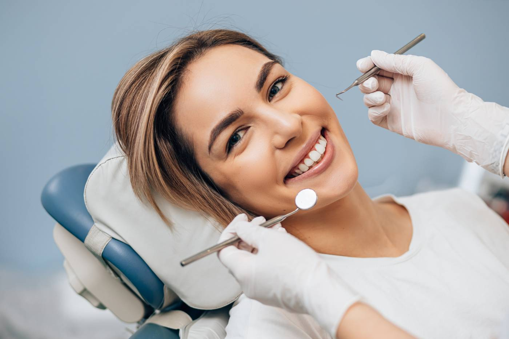
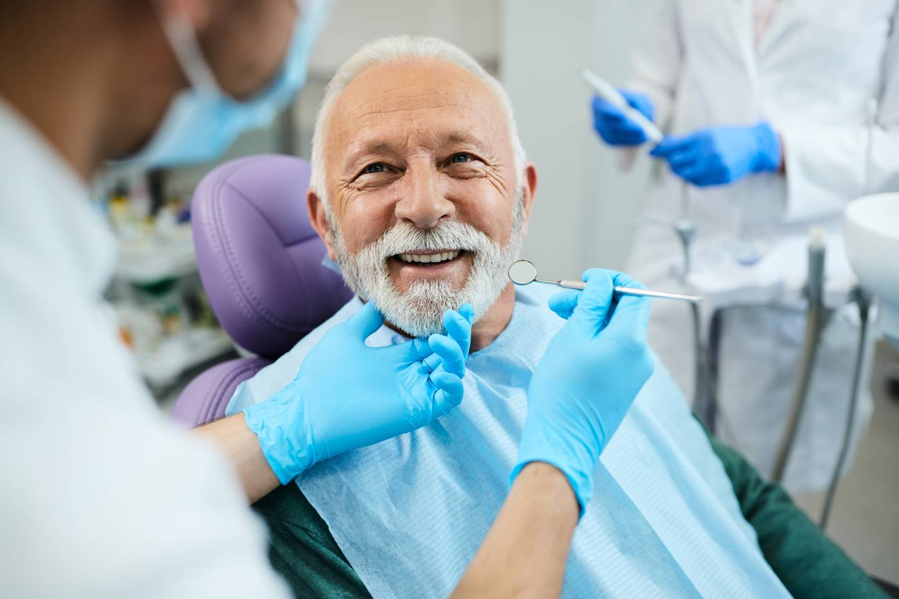

Community Based Care & Events

Free Dental Check-Up Event – Includes full examination, cleaning, personalised advice & treatment recommendations.

Children’s Oral Health Day – Fun brushing lessons and free dental goodie bags for kids.

Senior Smile Care Day – A dedicated community event offering free dental check-ups for adults aged 60+

Open Clinic Tour – Meet our staff, explore equipment and attend awareness sessions.